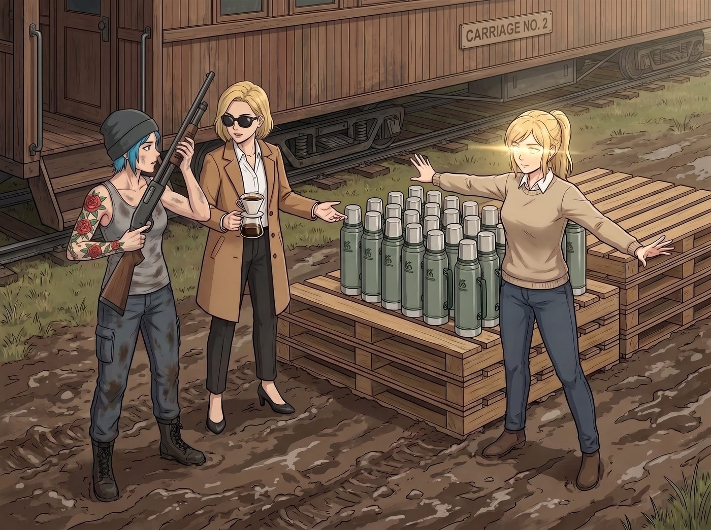
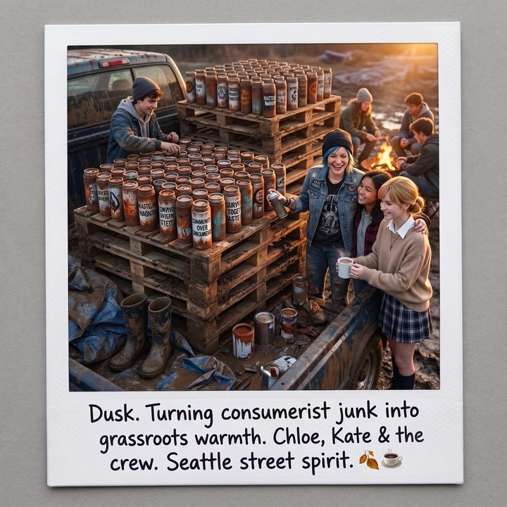

善良就只是善良


狂歡過後的第二天清晨，二號車廂外的泥地上，整整齊齊地堆放著兩個巨大的木棧板。
棧板上，是品牌方在簽約初期為了讓她們做「粉絲抽獎（Giveaway）」而提前運來的、整整五百個印著品牌 Logo 的「莫蘭迪綠」中產保溫杯。
此時，這五百個杯子正面臨著極其殘酷的命運審判。
Chloe 穿著沾滿機油的背心，手裡拿著一把從當鋪淘來的雷明頓（Remington）散彈槍，正在往裡面塞著橡膠訓練彈。「大小姐，妳覺得我們是把它們排成一排當靶子打比較爽，還是直接用 ATV 把這堆『工業垃圾』全部碾平比較解恨？」
Victoria 戴著墨鏡，手裡端著一杯手沖咖啡，冷酷地給出了老錢的處刑方案：「碾平太便宜它們了。我建議把它們全部扔進妳那個用來融化廢鐵的高溫熔爐裡，讓這個世界上徹底失去這批品味低劣的鋁合金渣滓。」
就在這兩個「過氣網紅」準備對這批滯銷庫存進行物理毀滅時，一道溫柔卻絕對不容抗拒的身影，擋在了那座保溫杯大山的前面。
Kate 張開雙臂，像一隻護崽的母雞，眼神裡閃爍著不贊同的「聖潔之光」。
「妳們兩個，把槍和車鑰匙都給我放下！」Kate 嚴肅地皺著眉頭，看著這兩個敗家子，「這些是全新的、能保溫 24 小時的雙層真空水杯！西雅圖的冬天馬上就要到了，救助站裡那些無家可歸的孩子，在街頭最需要的就是一口熱水！妳們居然想把它們碾平？！」
「可是 Kate，」Victoria 嫌棄地指著杯子上的 Logo，「這上面印著那個蠢牌子的標誌。如果我們把它們送出去，萬一有人認出這就是『泥巴土撥鼠』代言的東西怎麼辦？我的尊嚴不允許這種二手流通！」
「我同意大小姐。」Chloe 撇了撇嘴，「而且讓那些街頭的孩子用這種做作的中產階級杯子，簡直是在侮辱他們的龐克靈魂。」
「尊嚴和龐克靈魂，都不能當飯吃，也不能在攝氏零度的街頭保暖。」Kate 毫不退讓，溫柔的語氣裡透著不可撼動的固執。
就在雙方僵持不下時，二號車廂的門開了。
Lily 端著一杯熱牛奶走了出來。她徑直走到那堆保溫杯前，看了一眼包裝箱上的條碼，推了推圓框眼鏡。
Victoria 像看到了救星，立刻轉過身：「Lily，妳來得正好。既然 Kate 非要把這堆垃圾捐出去，那妳用妳的黑魔法算一下，這五百個杯子捐掉，能幫我們抵多少稅？至少得讓我這份屈辱值點錢吧。」
「對啊實習生！」Chloe 也湊了過來，眼睛發亮，「或者妳去找個什麼慈善機構的補貼名目，把這批杯子包裝成『冬季街頭關懷專案』，讓政府倒貼我們一筆，怎麼樣？」
Lily 在平板電腦上快速算了一遍，然後搖了搖頭。
「兩個都不行。」
「什麼？！」兩人同時叫出聲。
「先說抵稅。這批樣品是品牌方免費送來的，我們的成本基礎是零。按照稅法，捐出一件成本為零的東西，能抵扣的金額也是零。」Lily 平靜地說，「至於補貼，我們什麼錢都沒出、什麼專案都沒辦，只是把別人送的東西轉手送出去。把這包裝成專案去申請補貼，那不叫黑魔法，那叫詐領公款。」
Victoria 張了張嘴，Chloe 撓了撓頭，兩個人都找不到話反駁。
「反過來，如果摧毀它們，我們還得付一百五十美元的垃圾處理費。」
Lily 頓了頓，看向擋在杯子山前面的 Kate。
「所以這一次，捐出去不會讓我們賺到任何錢，也不會讓我們少繳一分稅。」她輕聲說，「善良就只是善良。」
面對這個沒有任何好處可拿、卻也找不到任何理由反對的結論，Victoria 和 Chloe 徹底沒脾氣了。
「好吧……」Victoria 妥協了，但她依然指著那個 Logo 咬牙切齒，「但前提是，我絕對不能讓那個見鬼的商標出現在大街上！」
「這好辦。」
Chloe 扔下散彈槍，從工坊裡拖出了一個裝滿了各種防水噴漆、重金屬貼紙和奇異筆的巨大塑料箱，對著 Kate 露出了一個極度囂張的笑容。
「既然不能有 Logo，那我們就給這些中產階級垃圾做個『底層龐克大改造』。Kate，叫上妳庇護所裡那些喜歡塗鴉的小鬼頭，今天下午，工坊開放！」
當天下午，二號車廂外變成了一個極度混亂的 DIY 藝術加工廠。
十幾個從庇護所被 Kate 接來的、穿著破洞牛仔褲的邊緣青少年，拿著噴漆和奇異筆，在 Chloe 的指揮下，對那五百個保溫杯進行了慘無人道的「藝術解構」。
原本精緻的莫蘭迪綠被噴成了螢光粉、死亡黑和工業銀。
那個代表著「純粹自然之美」的商標，被孩子們貼上了骷髏頭、重金屬樂團的貼紙、甚至是被畫上了各種搞怪的鬼臉。
Chloe 甚至親自操刀，用角磨機在幾個杯子的表面打磨出了充滿廢土氣息的金屬戰損紋理。
看著這群因為有了新水杯和塗鴉權限而開心大笑的孩子們，Kate 一邊給他們發著剛烤好的巧克力餅乾，一邊露出了真正天使般的笑容。
就連一直躲在貨櫃裡嫌吵的 Victoria，最後也忍不住戴著手套走出來，奪過一個孩子的奇異筆，強迫症發作般地幫他把一個畫歪的幾何圖形補齊。
到了傍晚，五百個中產階級保溫杯已經徹底面目全非，變成了一批獨一無二的、充滿了西雅圖街頭抗爭精神的「廢土生存水壺」。
Max 坐在皮卡車的車斗邊緣，雙腳懸空。她看著夕陽下，Chloe 正攬著幾個青少年的肩膀教他們如何用噴漆噴出立體陰影，而 Kate 則在一旁溫柔地遞上熱可可。
Max 舉起寶麗來相機，對著這個將「消費主義廢物」轉化為「底層溫暖」的瞬間，按下了快門。
相紙吐出，Max 咬著筆蓋，在背面寫下： 『規則第 89 條：資本家拋棄的樣品，不需要被散彈槍毀滅。只要經過黑魔法師的一筆零元結算、天使的仁慈調度，以及龐克太妹的破壞性改造，它們就能成為這個寒冷冬天裡，最酷、最溫暖的戰利品。』